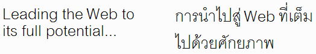

텍스트가 한 언어에서 다른 언어로 번역될 경우에는 소스 텍스트와 번역된 텍스트의 길이가 달라질 수 있습니다. 이러한 길이 차이를 체계화할 수 있는 몇 가지 방법이 있습니다.
이 문서에서는 기본적인 자료를 통해 이러한 체계화 간 차이점에 대해 설명합니다. 그 밖의 다른 문서들에서는 웹 페이지 디자인의 복잡성과 권장 솔루션에 대해 알아볼 것입니다.
일반적으로 레이아웃 디자인 작업은 유연성이 뛰어날수록 더 바람직합니다. 텍스트 리플로우를 허용하고 가능한 한 작은 고정 너비 컨테이너 또는 지나친 글자 폭 축소가 생기지 않도록 해야 합니다. 텍스트가 그래픽 내에 넉넉하게 들어갈 수 있도록 디자인하십시오. 글꼴 크기, 줄 높이 등을 번역본 텍스트에 쉽게 맞출 수 있도록 프레젠테이션과 컨텐츠는 분리합니다. 또한 문자 길이로 데이터베이스 필드 너비를 디자인할 때도 이러한 점을 염두에 두어야 합니다.
영어와 중국어 텍스트는 일반적으로 간격이 매우 촘촘하며 이러한 언어를 원본으로 해서 번역한 텍스트는 보통 원본보다 더 길어지게 되며, 때로 그 정도가 굉장히 심할 수 있습니다.
예를 들어, 최근 여러 언어로 번역된 Flickr 사용자 인터페이스를 들 수 있습니다. 자신의 사진을 볼 때 하나 이상의 공통 메시지에 사진 페이지를 본 횟수가 나타납니다(예: "392회 조회"). 다음 표에 '보기'에 사용된 Flickr 단어의 길이와 원본 영어 단어의 비율*이 나와 있습니다.
| 언어 | 번역 | 비율 |
|---|---|---|
| 한국어 | 조회 | 0.8 |
| 영어 | views | 1 |
| 중국어 | 次檢視 | 1.2 |
| 포르투갈어 | visualizações | 2.6 |
| 프랑스어 | consultations | 2.6 |
| 독일어 | -mal angesehen | 2.8 |
| 이탈리아어 | visualizzazioni | 3 |
포함된 글리프의 너비 때문에 중국어와 한국어 문자는 영어 문자의 두 배로 카운트됩니다.
한 단어만 비교한 것이라, 영어에 비해 이탈리아어의 글자 수가 300% 증가한 것은 어쩌면 그럴 수도 있다고 생각할 수 있습니다. 다음은 IBM에서 1994년에 출간한 National Language Design Guide Volume 1에서 발췌한 내용으로, 영어에서 유럽 언어로 번역된 텍스트의 길이가 증가하는 비율의 예상 평균치를 보여주고 있습니다.
| 영어 원문의 문자 수 |
평균 확장 |
|---|---|
| 최대 10 | 200–300% |
| 11–20 | 180–200% |
| 21–30 | 160–180% |
| 31–50 | 140–160% |
| 51–70 | 130–140% |
| 70 초과 | 150% |
일반적으로, 텍스트는 늘어나는데, 원본 메시지가 작을수록 번역본 길이는 더 길어진다는 점에 유의해야 합니다.
물론 모든 문자열이나 메시지가 다 그런 것은 아니지만, 이러한 상황을 처리할 수 있는 방법 몇 가지는 알고 있어야 합니다. 예를 들어, Flickr에서 독일어와 프랑스어의 경우 "FAQ"를 "FAQ"로 번역하지만 포르투갈어로는 "Perguntas freqüentes", 스페인어로는 "Preguntas frecuentes"로 번역되어 있습니다.
영어 텍스트 크기가 작을수록 양식 입력 필드, 그래픽 내부, 너비가 제한된 탭 등의 작은 공간에 더 많은 텍스트를 채워넣어야 한다는 점이 문제입니다.
또한 텍스트 확장이 영어와 중국어가 원본인 사용자 인터페이스만의 문제가 아니라는 점에도 유의하십시오. 원본 텍스트가 스페인어인 경우 "Idioma de la interfaz"라는 용어는 영어("Interface language")에서 더 작아지지만 말레이시아어("Bahasar pegantar untuk penelusuran")인 경우에는 훨씬 더 길어집니다. 또한 페이지에 불필요한 공백이 너무 많으면 번역량이 적을수록 문제가 더 커질 수 있습니다.
텍스트 단락을 다룰 때는 상대적인 확장이 덜 할 수 있지만 여전히 고려할 점들이 있습니다. 예를 들어, 필요한 것 모두를 번역 후에도 '중간 위쪽에' 채워넣을 수 있을까? 단락마다 다른 비율로 밑으로 내려가는 데도, 항목을 정렬하는 데 문제가 없는가? 등의 고민이 생길 수 있습니다.
번역 후의 문자 수를 예측할 수 없다는 어려움 외에, 텍스트 레이아웃 관리를 어렵게 만드는 다른 요인들도 있습니다.
핀란드어, 독일어, 네덜란드어 등 많은 언어들은 하나의 큰 '단어'를 만드는데, 여타의 다른 언어에서는 이같은 단어가 더 적은 여러 단어로 대체됩니다.
예를 들어, 영어인 "Input processing features"는 독일어로 "Eingabeverarbeitungsfunktionen"입니다. 사용 가능한 너비가 제한된 경우 영어 텍스트는 양식 입력 필드, 탭 또는 버튼, 좁은 열 등에서 쉽게 두 줄로 나누어 표시할 수 있는 반면 독일어는 자동으로 줄 바꿈이 되지 않아 레이아웃 작업이 어려워질 수 있습니다.
중국어, 일본어 및 한국어는 보통, 라틴 계열 언어보다 문자가 더 복잡합니다. 따라서 번역본의 문자 수가 동일하거나 더 적더라도 필요한 가로 공간은 훨씬 더 클 수 있습니다.
예를 들어, 영어인 "desktop"은 일본어로 "デスクトップ"입니다. 일본어가 글자는 한 자가 적지만 차지하는 가로 공간은 훨씬 더 많습니다.
비-라틴 계열 텍스트는 라틴 계열 텍스트보다 문자 수가 더 많은 것이 일반적입니다. 그 뿐 아니라, 이러한 스크립트는 라틴 계열 텍스트보다 줄 간 세로 간격이 더 커야 하는 경우가 많습니다.
예를 들어, 아래 그림에서는 동일한 텍스트를 영어와 태국어로 보여주고 있습니다. 각각의 경우, 줄이 두 개이지만 태국어가 차지하는 세로 간격이 훨씬 더 큽니다. 그 이유 중 하나는 문자의 복잡성(글리프가 더 높아 줄 높이가 길어짐) 때문이지만 보통 태국어의 줄 간 간격이 라틴 계열 텍스트보다 더 길기 때문이라는 이유도 있습니다. 아랍어(특히, Nastaliq 글꼴), 중국어 데바나가리(인도어에 사용), 일본어, 중국어, 티베트어 등을 포함하여 수많은 스크립트가 라틴 계열 텍스트보다 더 큰 높이를 필요로 합니다.

to make it fit in a restricted space라는 텍스트를 축약하려는 경우, 축약이 필요한지 여부를 진지하게 고려해야 합니다. 다른 언어에서는 그러한 축약이 적절하지 않을 수 있으며, 번역본 텍스트가 오히려 더 길어질 수도 있습니다.
축약은 많은 언어에서 일반적인 방식이 아닙니다. 언어마다 다른 스타일 때문일 수도 있고, 실용적인 이유 때문이기도 합니다. 예를 들어, 아랍어 '단어'는 매우 작은 패턴 기반 어원으로부터 구성되는 경향이 있으며, 정확한 의미를 표현하기 위해 접두어나 접미어에, 소소한 언어 내 변화까지, 다양한 변수가 존재합니다. 즉, 정확한 의미를 유지한 채 축약하기란 정말 어려운 일일 수 있습니다.
(또한 해당 축약형에 대한 정식 명칭 목록을 번역사에게 제공해야 할 수도 있습니다.)
Authoring HTML & CSS